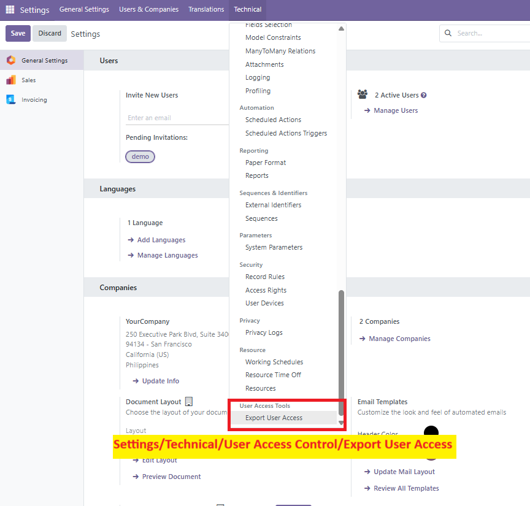

Export Users with Group Access in Excel
This module lets you generate a clean Excel report showing:
- All users in the system
- Their assigned groups categorized by application (e.g., Sales, Inventory, etc.)
- Clean Excel format with filters per column
üì∏ Screenshots

Very useful for audits, internal compliance, or just monitoring access privileges!